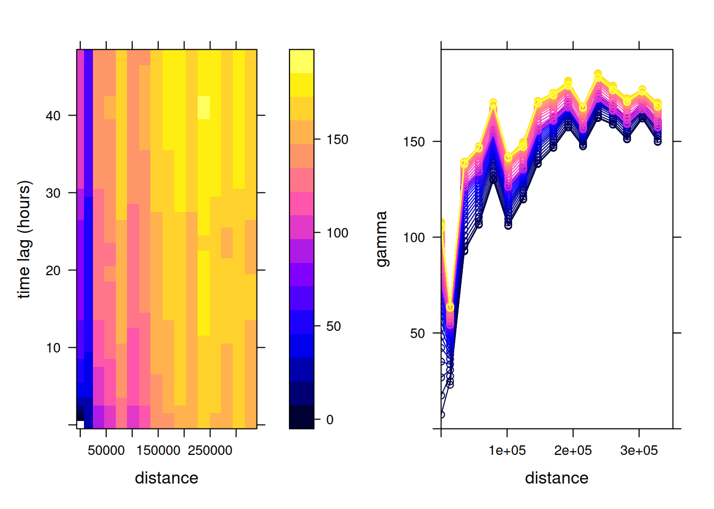
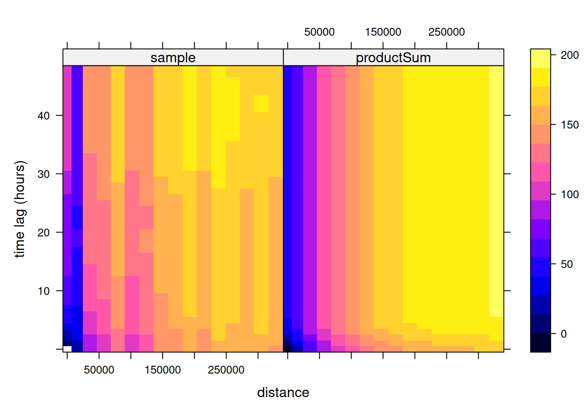
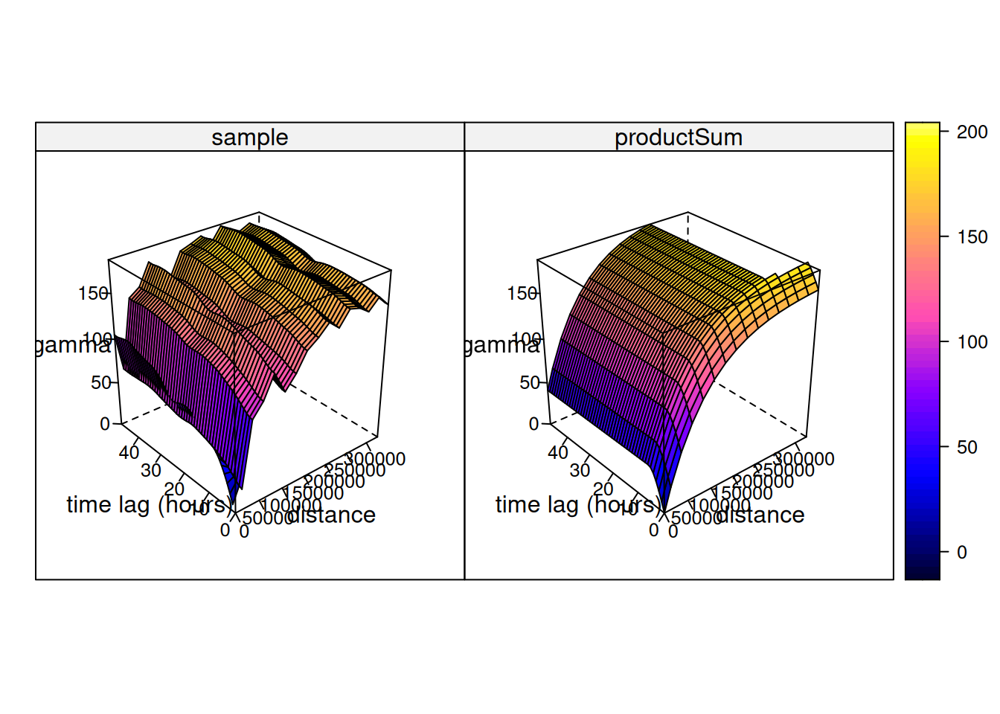
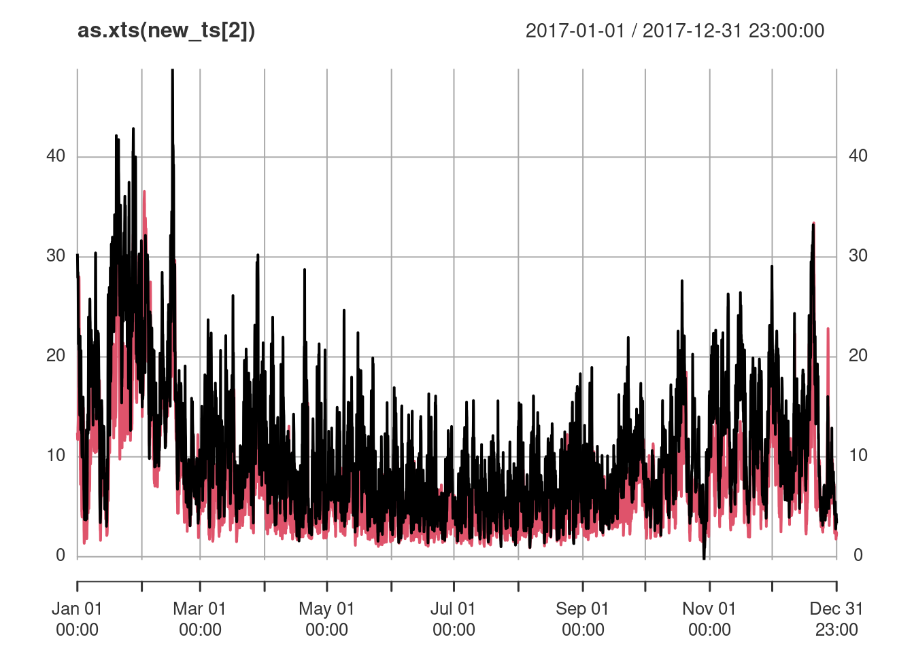
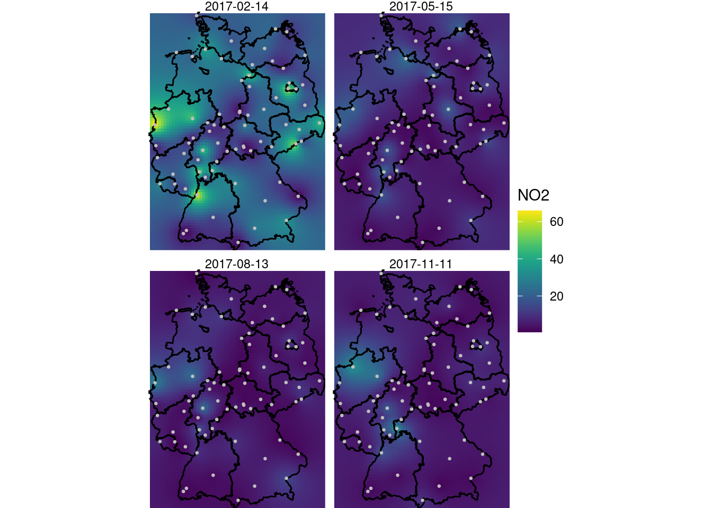

files <- list.files("aq", pattern = "*.csv", full.names = TRUE)
files <- setdiff(files, "aq/AirBase_v8_stations.csv") # metadata file
r <- lapply(files, function(f) read.csv(f))13 Multivariate and Spatiotemporal Geostatistics
Building on the simple interpolation methods presented in Chapter 12, this chapter continues with multivariate geostatistics and spatiotemporal geostatistics. The topic of multivariate geostatistics, more extensively illustrated in Bivand, Pebesma, and Gómez-Rubio (2013), is briefly introduced. Spatiotemporal geostatistics is illustrated with a worked out case study for spatiotemporal interpolation, using NO\(_2\) air quality data, and population density as covariate.
13.1 Preparing the air quality dataset
The dataset we work with is an air quality dataset obtained from the European Environmental Agency (EEA). European member states report air quality measurements to this agency. So-called validated data are quality controlled by member states, and are reported on a yearly basis. They form the basis for policy compliancy evaluations and (counter) measures.
The EEA’s air quality e-reporting website gives access to the data reported by European member states. We decided to download hourly (time series) data, which is the data primarily measured. A web form helps convert simple selection criteria into an http GET request. The URL was created to select all validated (Source=E1a) \(NO_2\) (Pollutant=8) data for 2017 (Year_from, Year_to) from Germany (CountryCode=DE). It returns a text file with a set of URLs to CSV files, each containing the hourly values for the whole period for a single measurement station. These files were downloaded and converted to the right encoding using the dos2unix command line utility.
In the following, we will read all the files into a list, except for the single file with the station metadata:
then we convert the time variable into a POSIXct variable, and put them in time order by
Sys.setenv(TZ = "UTC") # don't use local time zone
r <- lapply(r, function(f) {
f$t = as.POSIXct(f$DatetimeBegin)
f[order(f$t), ]
}
)We remove smaller sub-datasets, which for this dataset have no hourly data:
and then merge all files using xts::cbind, so that records are combined based on matching times:
A usual further selection for this dataset is to select stations for which 75% of the hourly values measured are valid, i.e., drop those with more than 25% missing hourly values. Knowing that mean(is.na(x)) gives the fraction of missing values in a vector x, we can apply this function to the columns (stations):
Next, the station metadata was read and filtered for rural background stations in Germany ("DE") by
These stations contain coordinates, and an sf object with (static) station metadata is created by
library(sf) |> suppressPackageStartupMessages()
a2.sf <- st_as_sf(a2, crs = 'OGC:CRS84',
coords = c("station_longitude_deg", "station_latitude_deg"))We now subset the air quality measurements to include only stations that are of type rural background, which we saved in a2:
We can compute station means and join these to station locations by
tb <- tibble(NO2 = apply(aqsel, 2, mean, na.rm = TRUE),
station_european_code = colnames(aqsel))
crs <- st_crs('EPSG:32632')
right_join(a2.sf, tb) |> st_transform(crs) -> no2.sf
read_sf("data/de_nuts1.gpkg") |> st_transform(crs) -> deStation mean NO\(_2\) concentrations, along with country borders, are shown in in Figure 12.1.
13.2 Multivariable geostatistics
Multivariable geostatics involves the joint modelling, prediction, and simulation of multiple variables, \[Z_1(s) = X_1 \beta_1 + e_1(s)\] \[...\] \[Z_n(s) = X_n \beta_n + e_n(s).\] In addition to having observations, trend models, and variograms for each variable, the cross-variogram for each pair of residual variables, describing the covariance of \(e_i(s), e_j(s+h)\), is required. If this cross-covariance is non-zero, knowledge of \(e_j(s+h)\) may help predict (or simulate) \(e_i(s)\). This is especially true if \(Z_j(s)\) is more densely sample than \(Z_i(s)\). Prediction and simulation under this model are called cokriging and cosimulation. Examples using gstat are found when running the demo scripts
and are further illustrated and discussed in Bivand, Pebesma, and Gómez-Rubio (2013).
In case the different variables considered are observed at the same set of locations, for instance different air quality parameters, then the statistical gain of using cokriging as opposed to direct (univariable) kriging is often modest, when not negligible. A gain may however be that the prediction is truly multivariable: in addition to the prediction vector \(\hat{Z(s_0)}=(\hat{Z}_1(s_0),...,\hat{Z}_n(s_0))\), we get the full covariance matrix of the prediction error (Ver Hoef and Cressie 1993). Using these prediction error covariances, for any linear combination of \(\hat{Z}(s_0)\), such as \(\hat{Z}_2(s_0) - \hat{Z}_1(s_0)\), we can get the standard error of that combination.
Although sets of direct and cross-variograms can be computed and fitted automatically, multivariable geostatistical modelling becomes quickly hard to manage when the number of variables gets large, because the number of direct and cross-variograms required is \(n(n+1)/2\).
In case different variables refer to the same variable taken at different time steps, one could use a multivariable (cokriging) prediction approach, but this would not allow for interpolation between two time steps. For this, and for handling the case of having data observed at many time instances, one can also model its variation as a function of continuous space and time, as of \(Z(s,t)\), which we will do in the next section.
13.3 Spatiotemporal geostatistics
Spatiotemporal geostatistical processes are modelled as variables having a value everywhere in space and time, \(Z(s,t)\), with \(s\) and \(t\) the continuously indexed space and time index. Given observations \(Z(s_i,t_j)\) and a variogram (covariance) model \(\gamma(s,t)\) we can predict \(Z(s_0,t_0)\) at arbitrary space/time locations \((s_0,t_0)\) using standard Gaussian process theory.
Several books have been written recently about modern approaches to handling and modelling spatiotemporal geostatistical data, including Wikle, Zammit-Mangion, and Cressie (2019) and Blangiardo and Cameletti (2015). Here, we will use Gräler, Pebesma, and Heuvelink (2016) and give some simple examples using the dataset also used for the previous chapter.
A spatiotemporal variogram model
Starting with the spatiotemporal matrix of NO\(_2\) data in aq constructed at the beginning of this chapter, we selected complete records taken at rural background stations into aqsel. We can select the spatial locations for these 74 stations by
sfc <- st_geometry(a2.sf)[match(colnames(aqsel),
a2.sf$station_european_code)] |>
st_transform(crs)and finally build a stars vector data cube with time and station as dimensions:
library(stars)
# Loading required package: abind
st_as_stars(NO2 = as.matrix(aqsel)) |>
st_set_dimensions(names = c("time", "station")) |>
st_set_dimensions("time", index(aqsel)) |>
st_set_dimensions("station", sfc) -> no2.st
no2.st
# stars object with 2 dimensions and 1 attribute
# attribute(s):
# Min. 1st Qu. Median Mean 3rd Qu. Max. NA's
# NO2 -8.1 3.02 5.66 8.39 10.4 197 16134
# dimension(s):
# from to offset delta refsys point
# time 1 8760 2017-01-01 UTC 1 hours POSIXct NA
# station 1 74 NA NA WGS 84 / UTM z... TRUE
# values
# time NULL
# station POINT (439814 ...,...,POINT (456668 ...From this, we can compute the spatiotemporal variogram using
v.st <- variogramST(NO2~1, no2.st[,1:(24*31)], tlags = 0:48,
cores = getOption("mc.cores", 2))which is shown in Figure 13.1.
Code

To this sample variogram, we can fit a variogram model. One relatively flexible model we try here is the product-sum model (Gräler, Pebesma, and Heuvelink 2016), fitted by
# product-sum
prodSumModel <- vgmST("productSum",
space = vgm(150, "Exp", 200000, 0),
time = vgm(20, "Sph", 6, 0),
k = 2)
#v.st$dist = v.st$dist / 1000
StAni <- estiStAni(v.st, c(0,200000))
(fitProdSumModel <- fit.StVariogram(v.st, prodSumModel,
fit.method = 7, stAni = StAni, method = "L-BFGS-B",
control = list(parscale = c(1,100000,1,1,0.1,1,10)),
lower = rep(0.0001, 7)))
# space component:
# model psill range
# 1 Nug 0.0166 0
# 2 Exp 152.7046 83590
# time component:
# model psill range
# 1 Nug 0.0001 0.00
# 2 Sph 25.5736 5.77
# k: 0.00397635996859073and shown in Figure 13.2, which can also be plotted as wire frames, shown in Figure 13.3. Fitting this model is rather sensitive to the chosen parameters, which may be caused by the relatively small number (74) of monitoring network stations available.
Code

Code

Hints about the fitting strategy and alternative models for spatiotemporal variograms are given in Gräler, Pebesma, and Heuvelink (2016).
With this fitted model, and given the observations, we can carry out kriging or simulation at arbitrary points in space and time. For instance, we could estimate (or simulate) values in the time series that are now missing: this occurs regularly, and in Section 12.4 we used means over time series based on simply ignoring up to 25% of the observations: substituting these with estimated or simulated values based on neighbouring (in space and time) observations before computing yearly mean values seems a more reasonable approach.
More in general, we can estimate at arbitrary locations and time points, and we will illustrate this with predicting time series at particular locations and and predicting spatial slices (Gräler, Pebesma, and Heuvelink 2016). We can create a stars object for two randomly selected spatial points and all time instances by
set.seed(1331)
pt <- st_sample(de, 2)
t <- st_get_dimension_values(no2.st, 1)
st_as_stars(list(pts = matrix(1, length(t), length(pt)))) |>
st_set_dimensions(names = c("time", "station")) |>
st_set_dimensions("time", t) |>
st_set_dimensions("station", pt) -> new_ptand we obtain the spatiotemporal predictions at these two points using krigeST by
no2.st <- st_transform(no2.st, crs)
new_ts <- krigeST(NO2~1, data = no2.st["NO2"], newdata = new_pt,
nmax = 50, stAni = StAni, modelList = fitProdSumModel,
progress = FALSE)where the results are shown in Figure 13.4.

Alternatively, we can create spatiotemporal predictions for a set of time-stamped raster maps, evenly spaced over the year 2017, created by
st_bbox(de) |>
st_as_stars(dx = 10000) |>
st_crop(de) -> grd
d <- dim(grd)
t4 <- t[(1:4 - 0.5) * (3*24*30)]
st_as_stars(pts = array(1, c(d[1], d[2], time = length(t4)))) |>
st_set_dimensions("time", t4) |>
st_set_dimensions("x", st_get_dimension_values(grd, "x")) |>
st_set_dimensions("y", st_get_dimension_values(grd, "y")) |>
st_set_crs(crs) -> grd.stand the subsequent predictions are obtained by
and shown in Figure 13.5.
Code
library(viridis)
library(viridisLite)
library(ggplot2)
g <- ggplot() + coord_equal() +
scale_fill_viridis() +
theme_void() +
scale_x_discrete(expand=c(0,0)) +
scale_y_discrete(expand=c(0,0))
g + geom_stars(data = new_int, aes(fill = NO2, x = x, y = y)) +
facet_wrap(~as.Date(time)) +
geom_sf(data = st_cast(de, "MULTILINESTRING")) +
geom_sf(data = no2.sf, col = 'grey', cex = .5) +
coord_sf(lims_method = "geometry_bbox")
A larger value for nmax was needed here to decrease the visible disturbance (sharp edges) caused by discrete neighbourhood selections, which are now done in space and time.
Irregular space time data
For the case where observations are collected at locations that vary constantly, or at fixed locations but without a common time basis, stars objects (vector data cubes) do not represent them well. Such irregular space time observations can be represented by sftime objects, provided by package sftime (Teickner, Pebesma, and Graeler 2022), which are essentially sf objects with a specified time column. An example of its uses is found in demo(sftime), provided in package gstat.
13.4 Exercises
- Which fraction of the stations is removed in Section 13.1 when the criterion applied that a station must be 75% complete?
- From the hourly time series in
no2.st, compute daily mean concentrations usingaggregate, and compute the spatiotemporal variogram of this. How does it compare to the variogram of hourly values? - Carry out a spatiotemporal interpolation for daily mean values for the days corresponding to those shown in Figure 13.5, and compare the results.
- Following the example in the demo scripts pointed at in Section 13.2, carry out a cokriging on the daily mean station data for the four days shown in Figure 13.5.
- What are the differences of this latter approach to spatiotemporal kriging?